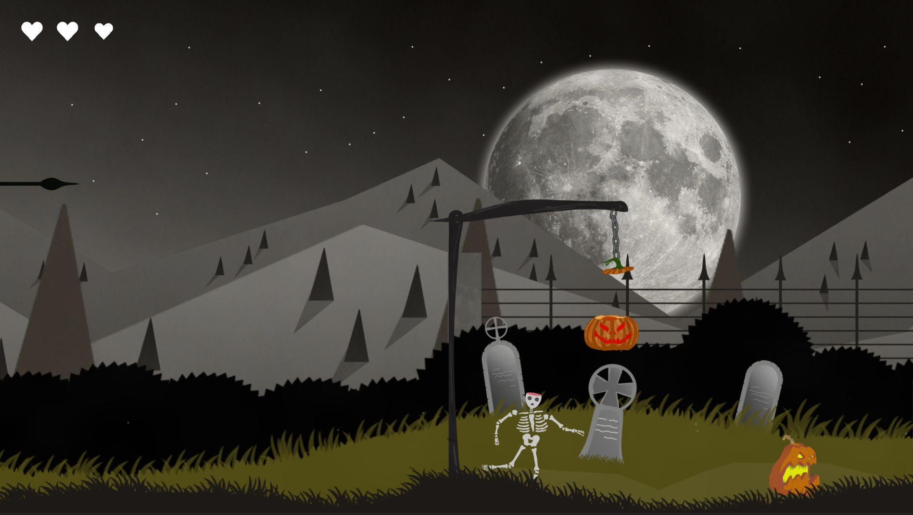
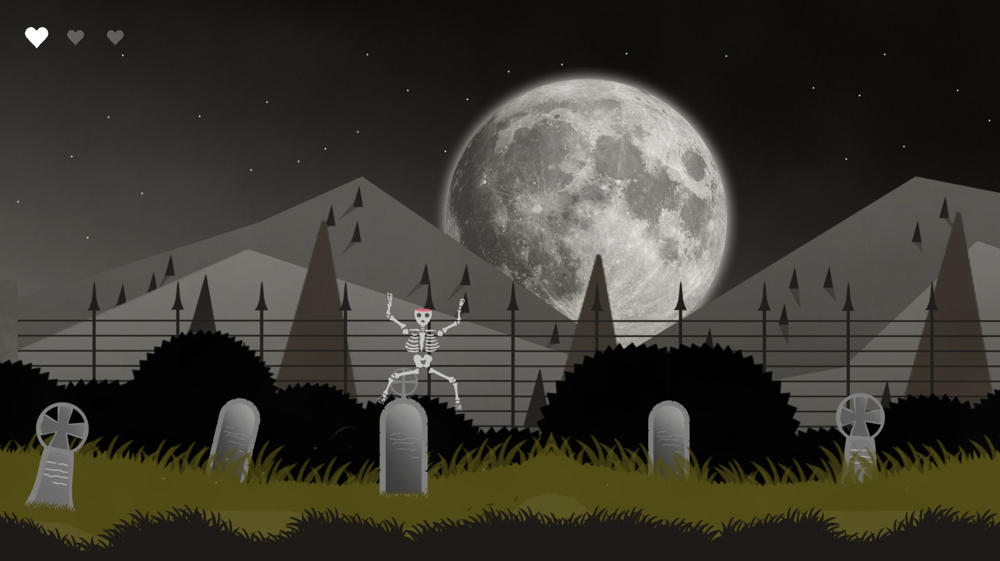
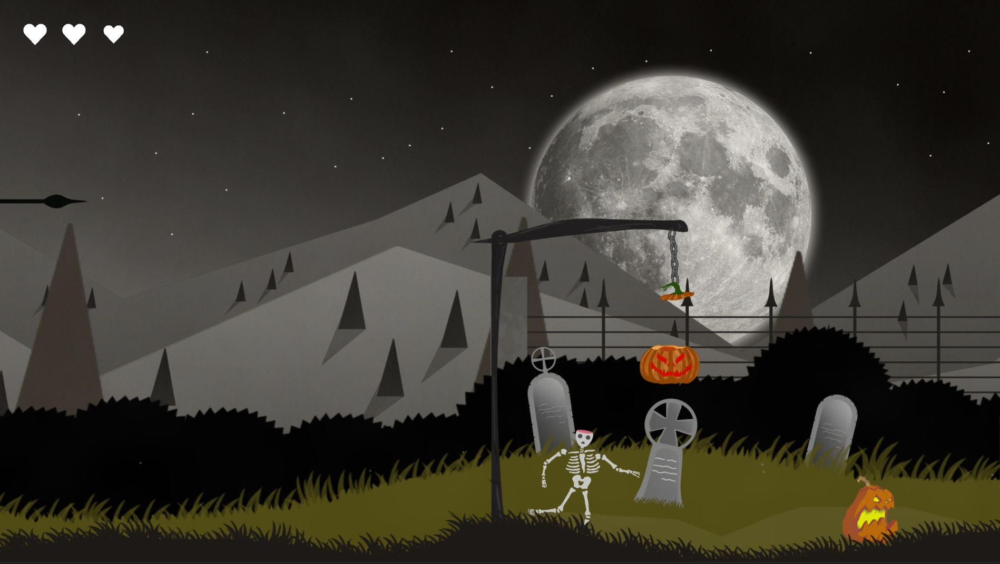
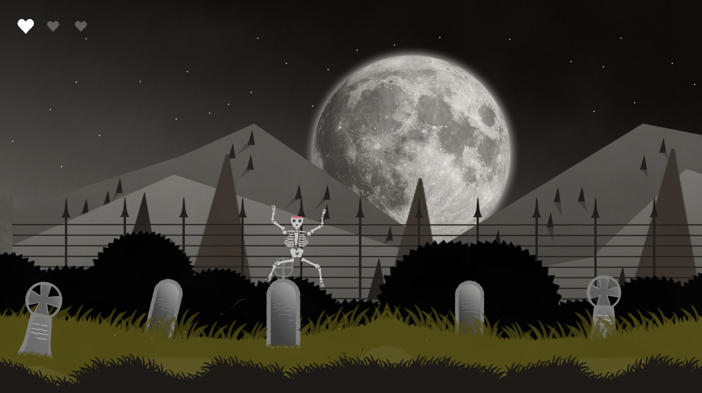

This is just a halloween scene. My aim was to create a nice scene and a fully functional character including movement and health for a future 2D project I want to build.
A video preview of the game
 



You're a skeleton in a cemetary with a couple of pumpkins to avoid.